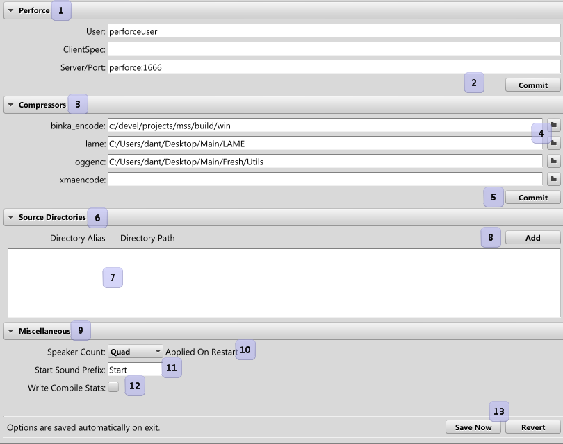

|
Options |
| Navigation |
Various options for controlling global settings for Miles Studio are here.

Source directories are aliases for directories that may move between machines. In short, there's a name and an associated location on disk. If there's a sound that uses that path, instead of using the direct path, it uses the alias. When the bank is loaded on a different machine, the alias can reference a different location, allowing for some flexibility between sound designer's machines.
 Timeline Timeline |
 Miles Studio Reference Miles Studio Reference |
 Search Search |

|
Miles Sound System 9.3b
E-mail miles3@radgametools.com for technical support. Copyright © 1991-2012 by RAD Game Tools, Inc. All Rights Reserved. |

|